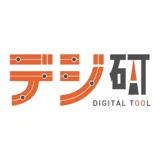

業種ごとに業務の詰まり方は違います。製造業、建設業、福祉・介護、飲食・小売、サービス業、不動産・宿泊業など、中小企業で相談されやすいDX・AI活用テーマを整理します。
市町村名や業種名だけを差し替えた量産ページではなく、実際に多い業務課題と支援範囲を整理します。自社に近い業種を起点に、課題別事例やサービスLPへ進めます。
日報、工程管理、在庫、品質記録、給与計算、帳票作成など、紙とExcelが残りやすい業務を整理します。
製造業の事例を見る
現場報告、写真管理、案件進捗、見積、職人との連絡、書類作成をデジタル化します。
建設業の事例を見る
日報、利用者情報、家族連絡、シフト、マニュアル共有など、現場負担を減らす仕組みを整えます。
福祉・介護の事例を見る
在庫、レシピ、発注、POP、SNS、顧客管理、予約管理などを小さく改善します。
小売の事例を見る
予約、顧客管理、SNS、口コミ、スタッフ教育、LINE配信を整理します。
美容・サービスの事例を見る
物件管理、問い合わせ、清掃、予約、価格調整、報告書作成などを支援します。
不動産・宿泊の事例を見る
近い事例がなくても、業務の流れを伺い、最初に改善する範囲を一緒に決めます。